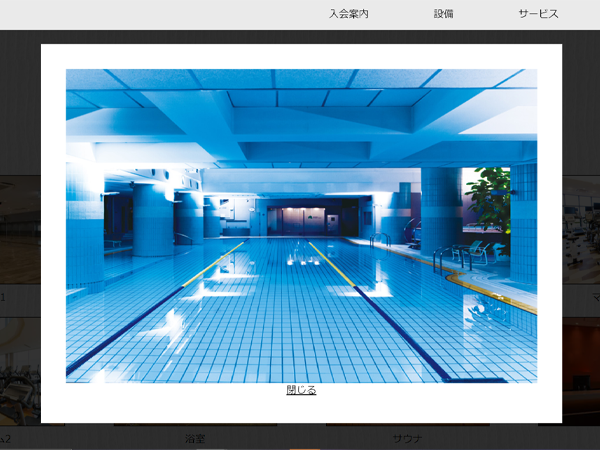

説明 :

このWebサイトは職業訓練校にて入校4か月時点（2020年6月）で制作した架空のスポーツクラブサイトです。
グループでペルソナやお店の雰囲気、コンセプトを考え、サイトは各メンバー別々で作りました。
「落ち着いた雰囲気」がコンセプトでしたので全体的なイメージを調整するべく背景を白っぽい木目調で統一しました。
また、jqueryを使うことを課題とされていたので、２か所でjqueryを使っています。
まずファーストビューの部分でjqueryのBgSwitcherというプラグインを用いて、数枚の背景画像が
ランダムで入れ替わり続けるようになっています。

こちらの設備紹介のコーナーではモーダルウィンドウを実装しました。
このモーダルウィンドウはプラグインを用いずに０から実装しました。モーダルウィンドウが展開され画像下の閉じるの文章か
外側の半透明の黒い部分をクリックすることで閉じるようになっています。
使用技術 :


メインページへ